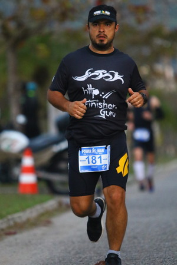

Finisher: alguém determinado a cruzar uma linha de chegada, sendo persistente mesmo em más condições, no intuito de atingir suas metas.
Paulo Jerônimo
Se você está realmente determinado, você pode realizar muito mais do que você pensa
Gabrielle Andersen - 2h48min42s nas Olimpíadas de Los Angeles em 1984
Camisetas! :D - Preta (Powerman Brasil 2016) ↓ e Branca (TH3)
Pratique esportes e ganhe pensamentos, atitudes e hábitos saudáveis.
Aprenda a usar as tecnologias disponíveis e que podem te auxiliar na melhoraria de tuas práticas esportivas.